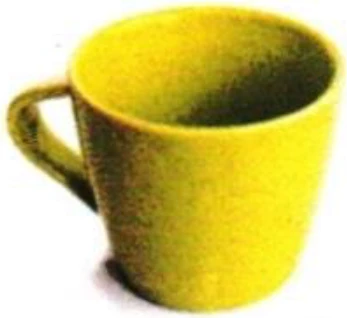
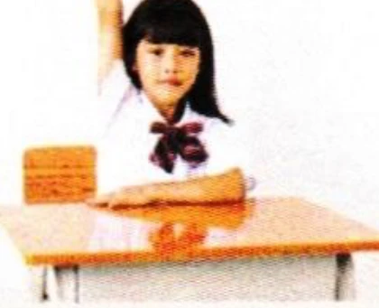
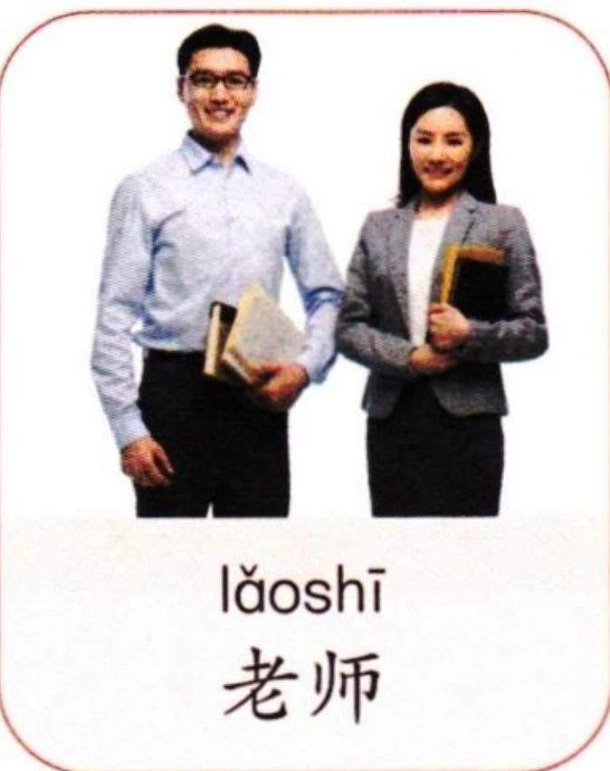
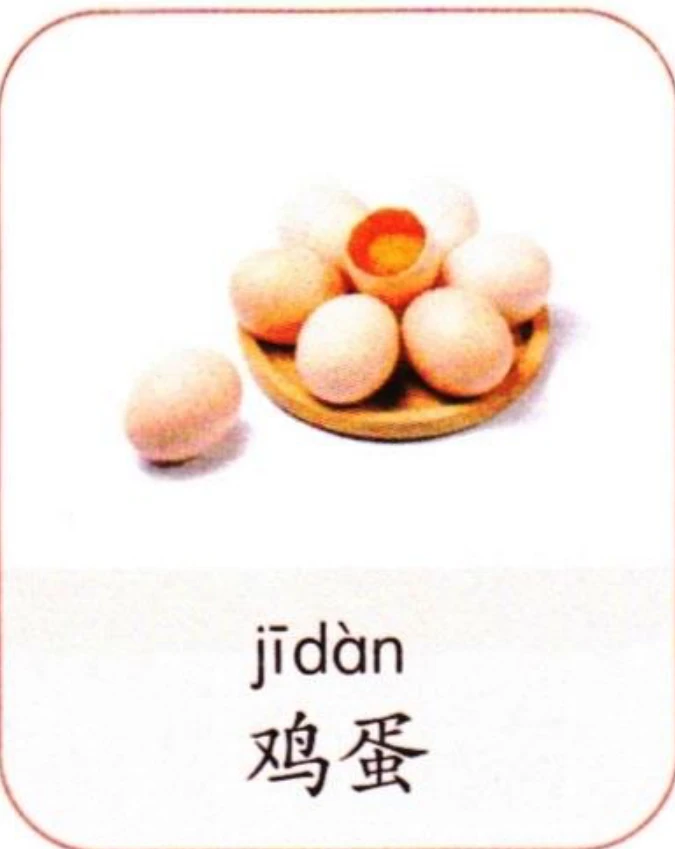

2声母和韵母（1）Initials and Finals (1)Инициали и финали (1)
汉语声母和韵母拼合组成音节，但是声母和韵母不是都能相拼的。在下方表格列举的部分声母中，除了声母“n、l”，其他声母都不能和韵母“ü”及“ü”开头的韵母相拼。另外，声母“b、p、f”不和韵母“e”相拼；声母“f、g、k、h”不和韵母“i”相拼。韵母“er”不和任何声母相拼，而是单独作为一个音节。In Chinese, initials and finals combine to form syllables, but not all initials can be pairedwith all finals.Among the initials listed in the table below, except for the initials “n” and “l”, no otherinitials can combine with the final “ü” or the finals beginning with “ü”. In addition, the initials“b”, “p”, and “f” do not combine with the final “e”; the initials “f”, “g”, “k”, and “h” do notcombine with the final “i”.The final “er” does not combine with any initial and stands alone as an independent syllable.В китайском языке инициали и финали объединяются в слоги, но не все инициали могут сочетаться со всеми финалями. Среди инициалей, перечисленных в таблице ниже, за исключением “n” и “l”, никакие другие не могут сочетаться с финалью “ü” или финалями, начинающимися с “ü”. Кроме того, инициали “b”, “p” и “f” не сочетаются с финалью “e”; инициали “f”, “g”, “k” и “h” не сочетаются с финалью “i”. Финаль “er” не сочетается ни с одной инициалью и выступает как самостоятельный слог.
先跟读声母和韵母，再大声朗读。Listen and repeat the initials and finals, then read aloud.Прослушайте и повторите инициали и финали, затем прочтите вслух.
3声调TonesТоны
汉语有4个基本声调，包括第一声（55）、第二声（35）、第三声（214）和第四声（51），也称一声、二声、三声、四声。声调要标在韵母的主要元音上。声调不同，意义也不同。There are four basic tones in Chinese: the first tone (55), the second tone (35), the thirdtone (214), and the fourth tone (51). Tone marks are placed above the main vowel of the final.Different tones can change the meaning of a syllable.В китайском языке четыре основных тона: первый тон (55), второй тон (35), третий тон (214) и четвертый тон (51). Тоновые знаки ставятся над главной гласной финали. Разные тоны могут изменять значение слога.
002